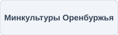
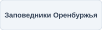
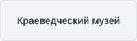

Природный объект
Фото: 12
Природный объект
Фото: 12
Откройте уникальные места Оренбургской области
Единая платформа для туристов, краеведов и фотографов: точные координаты, авторские маршруты и живые истории степного края.
Смотреть каталогПреимущества платформы
Удобная загрузка фотографий
Точные координаты на карте
Подробные описания от местных жителей
Актуальная информация и отзывы путешественников
Популярные достопримечательности
Природный объект
Фото: 12
Наши партнёры


